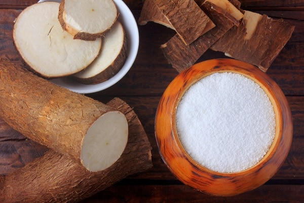

Por que o Aipim?

Como encontra-se na clássica obra 'Casa-Grande & Senzala', ao chegarem ao Brasil, os primeiros europeus se espantaram com a fartura da farinha de mandioca, muito mais abundante e fácil de ser obtida que a farinha de trigo europeia. No Brasil Colônia, foi um dos principais alimentos utilizados pelos colonos. Em forma de farinha, integrava vários pratos como bolo, beiju, sopa, angu e, às vezes, misturada apenas com água ou com feijão e carne, quando havia. O amido da mandioca também pode ser processado em forma de bolinhas para formar o sagu. Considerado um dos alimentos mais tradicionais da nossa cozinha, o aipim ocupa um lugar especial no coração dos brasileiros e fornece a energia necessária para o trabalho e o desenvolvimento do País.
Quem somos nós?
José Salim Arantes & Rosângela Maria de Mattos Arantes

Ele: artesão, pai, avô, amigo e botafoguense nas horas vagas. Ela: psicóloga, séria, competente e guardiã de uma família linda.
Juntos, fazem o melhor do aipim que você recebe com tanto zelo e cuidado. Casados há mais de dez anos, trabalham para entregar o amor que une a família e os afetos
em forma de comida artesanal de qualidade, com toda a praticidade e aquele carinho que só a culinária regional do interior pode oferecer.